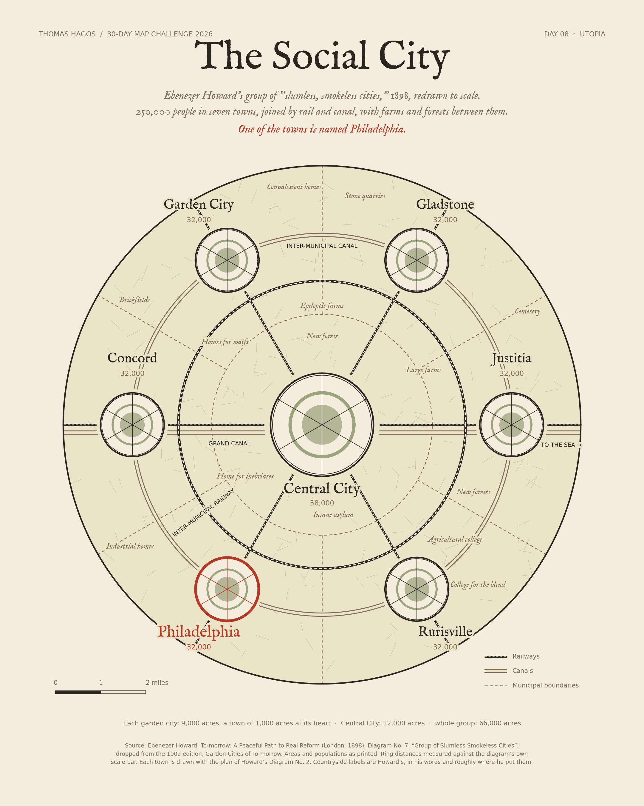

30-Day Map Challenge / Day 08 / Utopia
The Social City
Ebenezer Howard’s group of “slumless, smokeless cities,” 1898, redrawn to scale. 250,000 people in seven towns, joined by rail and canal. One of the towns is named Philadelphia.

Howard’s numbers
| Whole group | 66,000 acres | 250,000 people |
| Central City | 12,000 acres | 58,000 |
| Each garden city ×6 | 9,000 acres | 32,000 |
Howard didn’t stop at one garden city. When a town reached its limit, he wanted the next one built across a belt of countryside, all of them linked by fast rail into one “social city.” Several of the names are ideals: Justitia (justice), Concord, and Philadelphia, “brotherly love.”
Source: Ebenezer Howard, To-morrow: A Peaceful Path to Real Reform (1898), Diagram No. 7, dropped from the 1902 edition. Areas and populations as printed; ring distances measured against the diagram’s own scale bar; each town drawn with the plan of Howard’s Diagram No. 2. Original diagrams · Code and method.